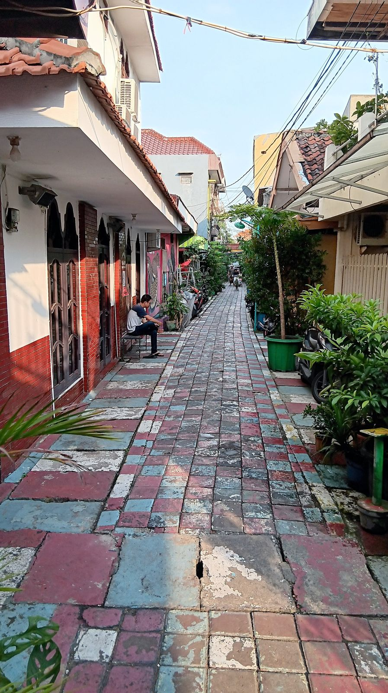
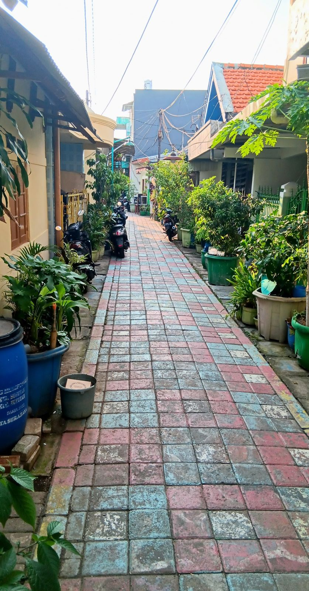
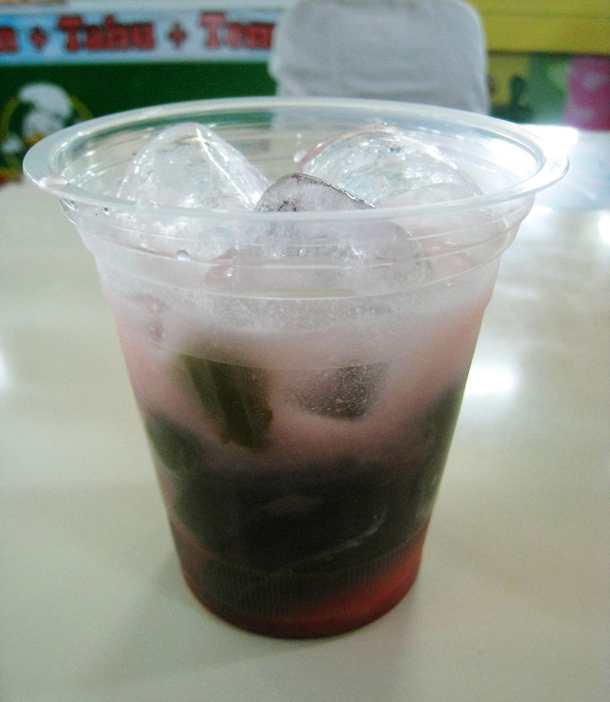
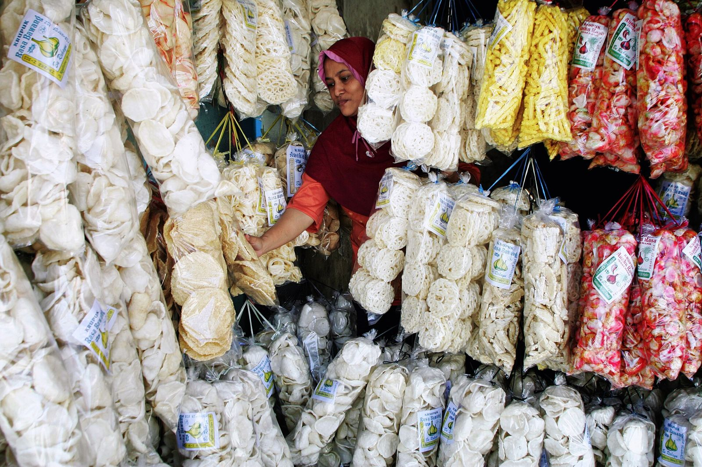
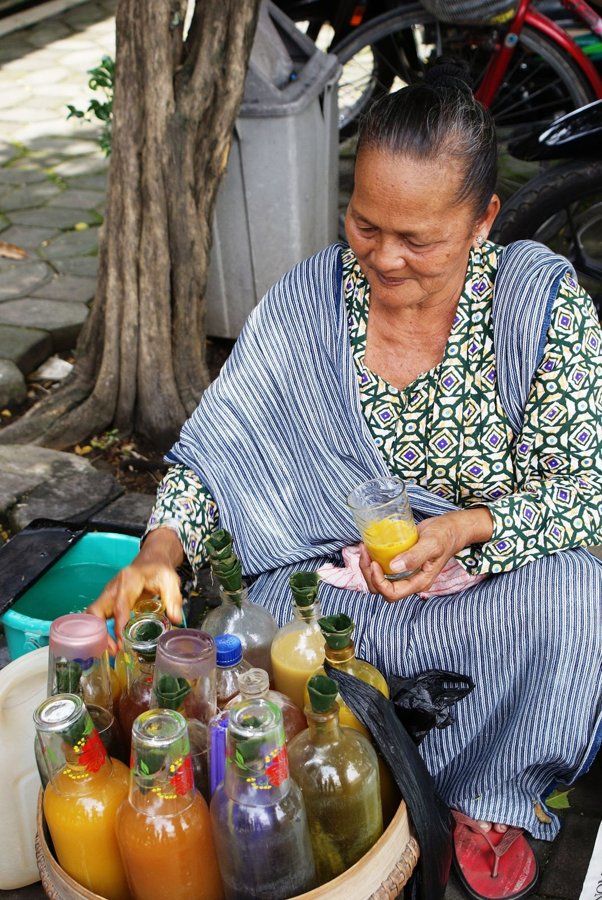

Musik Patrol
Anak-anak dan remaja kampung memainkan musik patrol untuk menyambut tamu. Tradisi ini juga mengajarkan mereka bekerja dalam kelompok.

Community & UMKM
Dari pemandu, lansia yang bernyanyi, sampai ibu-ibu pembuat semprit jahe. Wisata di Maspati dikerjakan bersama.

Pemandu di Maspati adalah warganya sendiri. Sebagian besar warga di sini sudah turun-temurun tinggal di kampung ini, sehingga cerita yang kamu dengar sering kali cerita keluarga mereka.
02 · Local artists
Anak-anak dan remaja kampung memainkan musik patrol untuk menyambut tamu. Tradisi ini juga mengajarkan mereka bekerja dalam kelompok.
Para lansia bernyanyi saat wisatawan memasuki kampung. Sapaan paling hangat di Maspati datang dari mereka.
Tari Remo dibawakan untuk menyambut wisatawan, sekaligus menjaga salah satu tari khas Jawa Timur tetap hidup.
03 · UMKM
Sebagian warga berdagang dari rumah, dan produk diolah dari bahan yang tumbuh di gang mereka sendiri.
| Wilayah | Produk unggulan | Harga |
|---|---|---|
| RT 01 | Olahan cincau | Rp5.000 |
| RT 02 | Stik lidah buaya, keripik pare | Rp15.000 /produk |
| RT 03 | Semprit jahe; Simpeda (sinom dan pecut kuda) | Rp25.000 /toples; Rp5.000 /porsi |
| RT 04 | Minuman herbal karet kebo; kari kambing | Rp15.000; Rp25.000 /porsi |
| RT 05 | Olahan markisa (minuman dan sirup) | Rp10.000; sirup Rp30.000 |
Harga berdasarkan data kajian tahun 2022 dan bisa berbeda dengan harga saat ini.

Cincau, sinom, dan karet kebo dibuat dari tanaman toga warga.

Stik lidah buaya, keripik pare, dan semprit jahe cocok dibawa pulang.

Ada Koperasi Kampung Lawas, Sentra Kuliner, rumah produksi UKM, dan pusat oleh-oleh JSS “Jan Sae Square”.
Mampir ke produk warga saat berkunjung, atau bawa pulang cendera mata Maspati.
Lihat merchandise